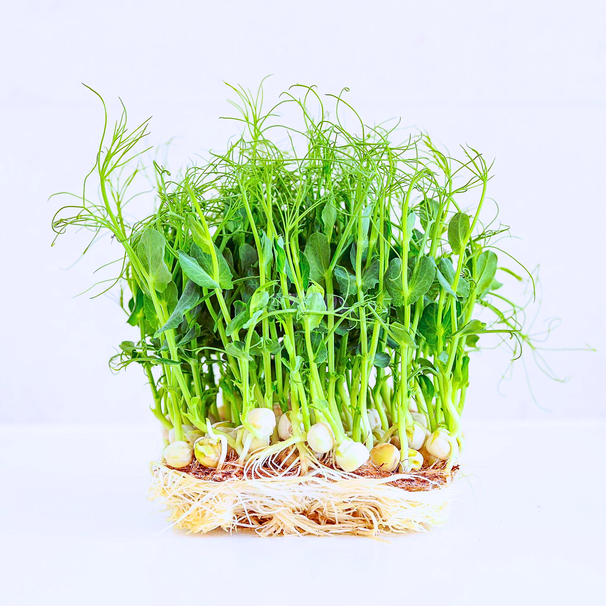
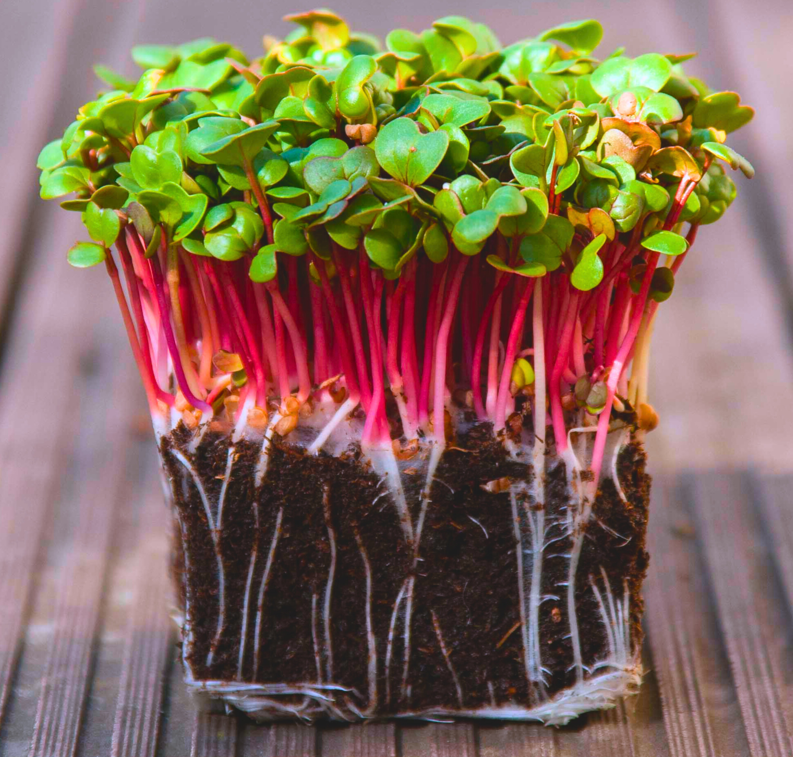
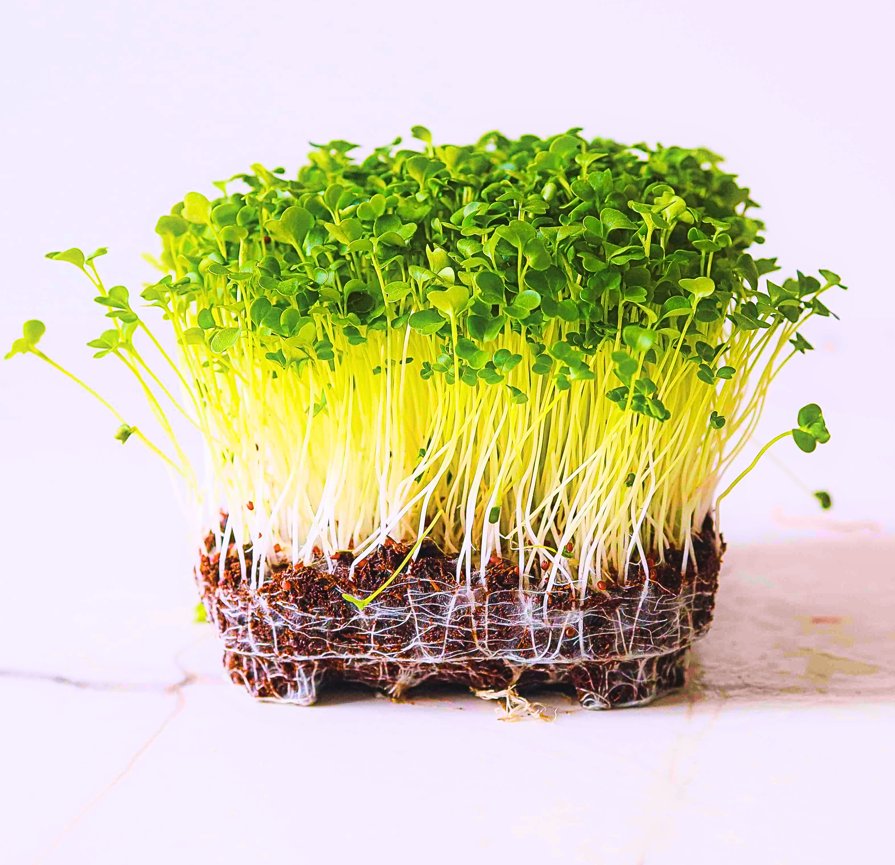
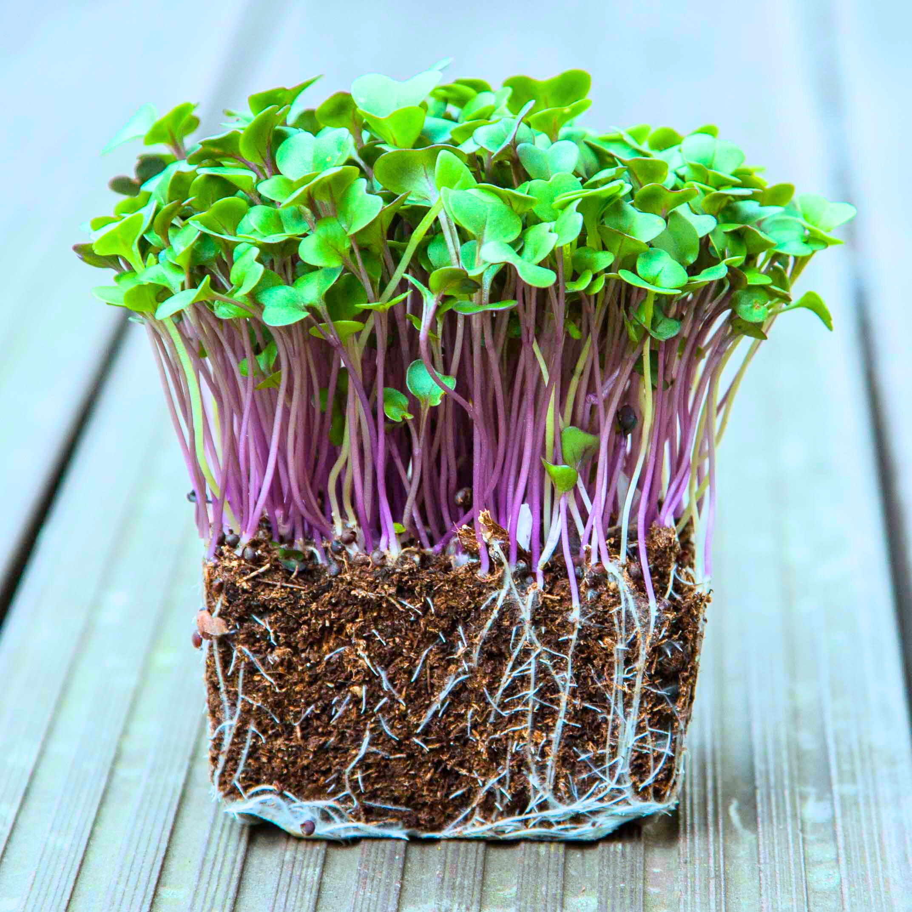
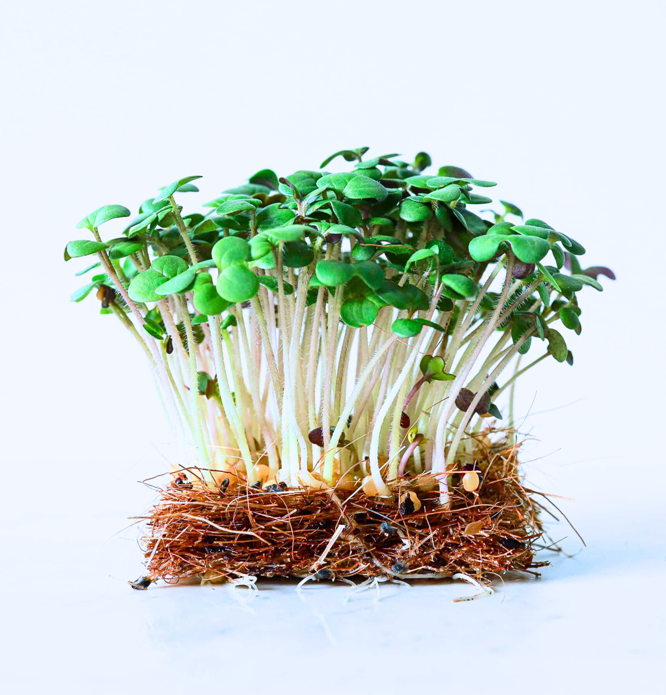
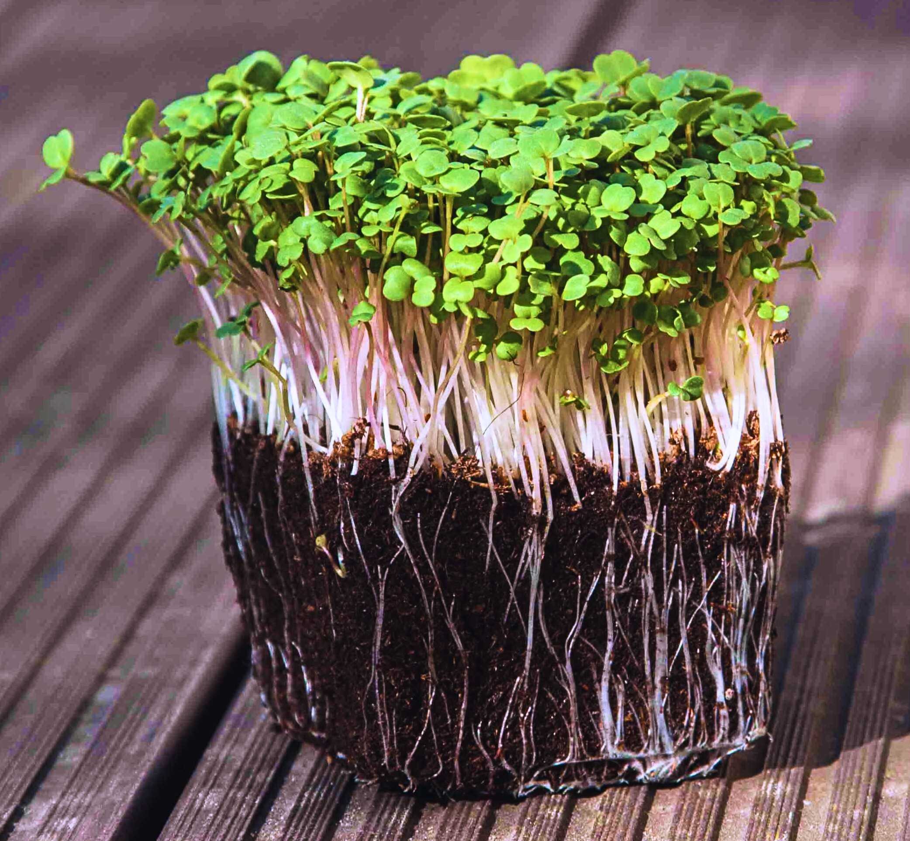
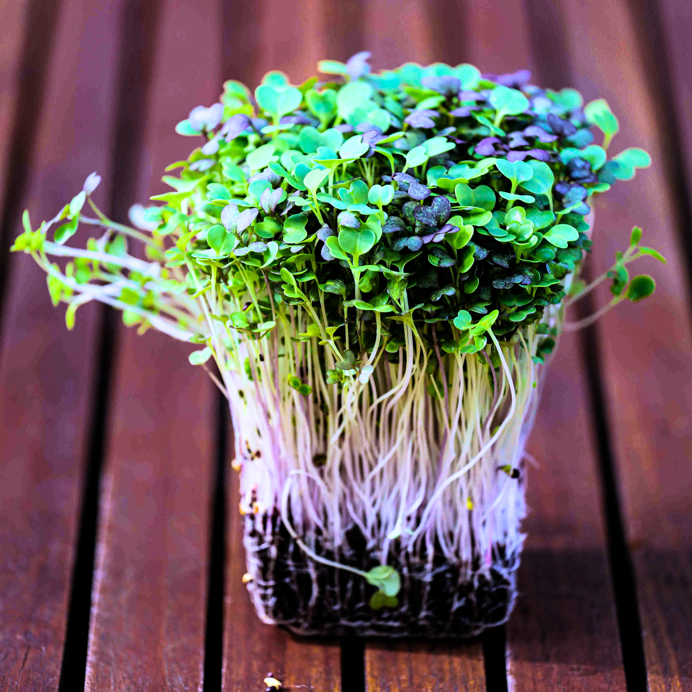
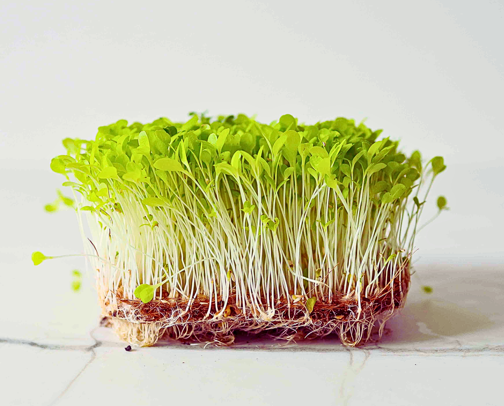
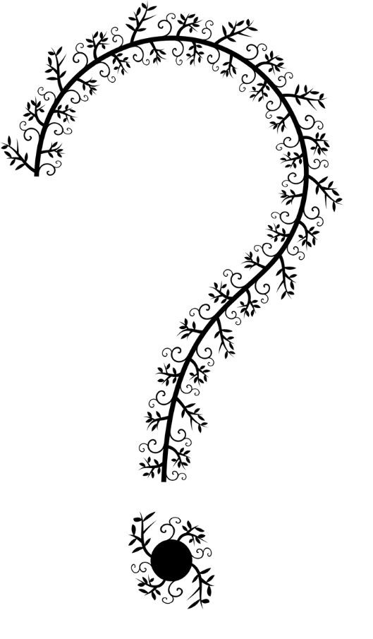

Naša Mikrozelenina

Hrášok
Hrášok
Pea Foxy
Sladký a chrumkavý, plný sviežosti.

Reďkovka
Reďkovka
Radish Pink
Ostrá a svieža, plná živín.

Brokolica
Jemná a zdravá pochúťka.

Kaleráb
Jemne sladkastý a osviežujúci, bohatý na živiny.

Horčica
Osviežujúca a jemne pikantná, plná chuti.

Rukola
Jemne korenistá a osviežujúca, plná energie.

Ázijský mix
Objavte lahodnú umami chuť.

Šalát
Svieži a chrumkavý, plný vitality.

Už čoskoro
:).
Už čoskoro
:)

Nový produkt 1
Krátky popis produktu 1.

Nový produkt 2
Krátky popis produktu 2.

Nový produkt 3
Krátky popis produktu 3.

Nový produkt 4
Krátky popis produktu 4.

Nový produkt 5
Krátky popis produktu 5.

Nový produkt 6
Krátky popis produktu 6.

Nový produkt 7
Krátky popis produktu 7.

Nový produkt 8
Krátky popis produktu 8.

Nový produkt 9
Krátky popis produktu 9.

Nový produkt 10
Krátky popis produktu 10.

Nový produkt 11
Krátky popis produktu 11.

Nový produkt 12
Krátky popis produktu 12.

Nový produkt 13
Krátky popis produktu 13.

Nový produkt 14
Krátky popis produktu 14.

Nový produkt 15
Krátky popis produktu 15.

Nový produkt 16
Krátky popis produktu 16.

Nový produkt 17
Krátky popis produktu 17.